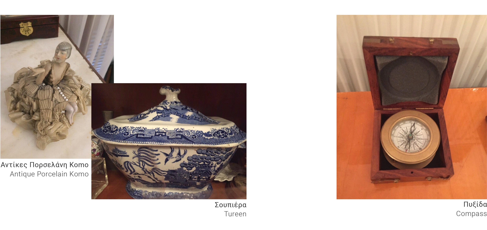
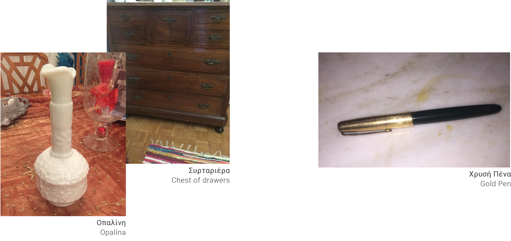

Ευρώπη Μοσχονά Καρκαβέλα Μαραγκάκη
Evropi Moschona Karkavela Maragaki
Παλή Κεφαλονιάς
Paliki
year born
1946
έτος γέννησης
Συνέντευξη: Σπύρος Μοσχονάς
Interviewer: Spyros Moschonas
Προσωπικές Πληροφορίες
Personal Information
“Γεννήθηκα το 1946. Εποχή δύσκολη ανάμεσα σε δύο άτυχα ιστορικά γεγονότα από εκείνα που φέρνουν καταστροφή, θάνατο και δυστυχία όπως λέει και ο Θουκυδίδης. Δεύτερος παγκόσμιος πόλεμος και εμφύλιος. Πάνω που τελείωναν αυτά ήρθε ο σεισμός του 1953 που στάθηκε ορόσημο και έκτοτε λέμε προ σεισμού και μετά σεισμό. Όπως λέμε πριν από τη Χιροσίμα και μετά τη Χιροσίμα (ατομική βόμβα).
Στο χωριό αυτό έζησα τα εφτά πρώτα χρόνια της ζωής μου. Το Σεπτέμβρη του 1953 μετοικήσαμε στο Αργοστόλι, όπου ζω μέχρι σήμερα. Έλειψα κάποια χρόνια για τις σπουδές μου και ξαναγύρισα εδώ. Εργάστηκα για 36 χρόνια στην Δευτεροβάθμια Εκπαίδευση.”
Στο χωριό αυτό έζησα τα εφτά πρώτα χρόνια της ζωής μου. Το Σεπτέμβρη του 1953 μετοικήσαμε στο Αργοστόλι, όπου ζω μέχρι σήμερα. Έλειψα κάποια χρόνια για τις σπουδές μου και ξαναγύρισα εδώ. Εργάστηκα για 36 χρόνια στην Δευτεροβάθμια Εκπαίδευση.”
"I was born in 1946. A difficult time between two unfortunate historical events, the kind of events that bring destruction, death and misery, as Thucydides says, i.e. WWII and the Civil War. On top of the end of these came the earthquake of 1953, a landmark event, and ever since we talk about time in Kefalonia using the terms “before” and “after” the earthquake.
In this village I lived the first seven years of my life. In September 1953 we moved to Argostoli, where I live until today. I was away some years for my studies and returned here. I worked for 36 years in Secondary Education.””
In this village I lived the first seven years of my life. In September 1953 we moved to Argostoli, where I live until today. I was away some years for my studies and returned here. I worked for 36 years in Secondary Education.””
Καθημερινή Ζωή
Everyday Life
“Στο σπίτι, σε κάθε σπίτι, μεγάλο η μικρό η ζωή ήταν απλή… Το ψωμί μας το φτιάχναμε στους φούρνους κάθε 15 μέρες περίπου. Τα ρούχα τα έπλεναν οι μανάδες μας στο ποτάμι. Συχνά την συντροφεύαμε τα παιδιά. Γενικά συμμετείχαμε σε όλα … Τα παιδιά είχαμε λίγα ακόμα, πολύ λίγα πράγματα… όμως νιώθαμε ευτυχία και με τα μικρά και ασήμαντα, όπως ένα μολύβι, ένα ασημόχαρτο. Τα παιχνίδια μας τα φτιάχναμε μόνοι μας. Όμως παίζαμε… παίζαμε πολύ. Οι γειτονιές βούιζαν από τα ευτυχισμένα γέλια μας.”
"In every house, big or small, living was simple… Bread was baked in the ovens every 15 days or so. The clothes were washed by our mothers in the river and, often, children would go along. In general, we participated in all activity…The children owned very few things... but we also felt happy with small and insignificant things, like a pencil. We created our toys and games by ourselves. But we played… we played a lot. The neighborhoods were buzzing with our happy laughter.”
Αξιομνημόνευτες Πρακτικές
Memorable Practices
“Οι κάτοικοι αποζούσαν από τη γεωργία και την κτηνοτροφία. Στον αγώνα για την επιβίωση σε κάθε εποχή με τις δικές τους ανάγκες και δυνατότητες (φύτεμα, όργωμα, σπορά, τρύγος, αλώνισμα, και τα λοιπά) συμμετείχαμε και τα παιδιά. Αυτό ήταν δώρο ζωής από την φύση γιατί πήραμε όχι μόνο τα πρώτα μαθήματα επιβίωσης, αλλά και τις πρώτες μας γνώσεις, και καλλιεργήσαμε δεξιότητες που αργότερα μας φάνηκαν πολύτιμες.”
"The inhabitants lived off agriculture and animal husbandry. We, the children, participated in the struggle for survival throughout the year, with each season presenting its own needs and opportunities (planting, plowing, sowing, harvesting, threshing, etc.). This was a gift of life from nature because we took not only the first lessons of survival, but also our first knowledge, and cultivated skills that later proved valuable to us.”

Περιφερειακά Όρόσημα
Regional Landmarks
“Το χωριό μου ήταν τότε το δεύτερο της Κεφαλονιάς σε πληθυσμό. .. Οι εκκλησίες μας, ο Σωτήρας, η Παναγιά, και το μικρό ξωκλήσι του Αγίου Σπυρίδωνα στο βουνό, όπως και το μεγάλο, καλοσχεδιασμένο δημοτικό σχολείο που έφτανε τότε να έχει 80 έως 100 μαθητές, έπαιζαν μεγάλο ρόλο σε αυτό που λέμε πολιτιστική ζωή ενός τόπου.”
"My village was then the second in Kefalonia in terms of population... Churches, such as Sotiras and Panagia, and the small chapel of Ag. Spyridonas on the mountain, as well as the large, well-designed elementary school –at that time with as many as 80 to 100 students– they all played a big role in what we call the cultural life of a place.”
Προσωπικά Άνέκδοτα
Personal Anecdotes
“Μια νέα κοπέλα, η Βαρβάρα κράταγε τις βελόνες του πλεξίματος και ένα κουβάρι μαλλί τιρκουάζ που το έβλεπα από μέρες και το λαχταρούσα. Το ήθελα τόσο για να πλέξω για τις κούκλες μου.
Είπα, θυμάμαι, στην Βαρβάρα: -«Αφού θα βουλιάξουμε, τι θα το κάνεις το μαλλί;»
Και εκείνη χωρίς άλλη σκέψη μου το έδωσε. Κοιμήθηκα στην αυλή μας κάτω από τα αστέρια με το μαλλί στο χέρι μου. Η γη βογκούσε συνέχεια, κανένας παραπάνω φόβος δεν υπήρχε μέσα μου. Μετά την προσευχή την βραδινή… γαλήνη. Ο σεισμός είχε τελειώσει. Έτσι πίστευα..”
Είπα, θυμάμαι, στην Βαρβάρα: -«Αφού θα βουλιάξουμε, τι θα το κάνεις το μαλλί;»
Και εκείνη χωρίς άλλη σκέψη μου το έδωσε. Κοιμήθηκα στην αυλή μας κάτω από τα αστέρια με το μαλλί στο χέρι μου. Η γη βογκούσε συνέχεια, κανένας παραπάνω φόβος δεν υπήρχε μέσα μου. Μετά την προσευχή την βραδινή… γαλήνη. Ο σεισμός είχε τελειώσει. Έτσι πίστευα..”
"A young girl, Barbara, was holding the knitting needles and a tangle of turquoise wool that I had been watching and craving for days.
I remember I said to Barbara: – ‘Since we are going to sink, what are you going to do with the wool?’
And without second thoughts she gave it to me. I slept in our yard under the stars with the wool in my hand. The earth groaned all the time, no more fear existed in me. After praying in the evening... serenity. The earthquake was over. Or, so I thought..”
I remember I said to Barbara: – ‘Since we are going to sink, what are you going to do with the wool?’
And without second thoughts she gave it to me. I slept in our yard under the stars with the wool in my hand. The earth groaned all the time, no more fear existed in me. After praying in the evening... serenity. The earthquake was over. Or, so I thought..”
Περιγραφή της 12ης Αυγούστου
Descriptions of August 12
“Κατά τις 11, αφού χορτάσαμε παιχνίδι, ανεβήκαμε σε μια μεγάλη μουριά που ήταν στο κέντρο της αυλής. Αυτό ήταν μια ξεχωριστή εμπειρία, γιατί το κούνημα των κλαδιών μας έδινε ένα αίσθημα ελευθερίας. Ήταν σα να πετάμε. Και παίζαμε ώρα αρκετή. Ήταν εντεκάμιση όταν συνέβη αυτό που συνέβη. Νιώσαμε το δέντρο μας σαν να πηγαίνει ψηλά και πάλι κάτω, και πάνω κάτω…
Ο χρόνος που κράτησε ο σεισμός φάνηκε σαν αιώνας. Κάποτε ηρέμησε η γη και κατεβήκαμε. Ακούγαμε φωνές, αλαλαγμούς, τα σκυλιά να γαβγίζουν. Τις κότες να κακαρίζουν και στον ορίζοντα βλέπαμε σύννεφα πυκνά σκόνης πάνω από το Ληξούρι και πάνω από το Αργοστόλι. Τα βουνά δεν ξεχώριζαν. Μήπως βουλιάξαμε; Αυτή η σκέψη με φόβισε. Και η μάνα μου, πού ήταν η μάνα μου ; και ο πατέρας μου που βρισκόταν;"
Ο χρόνος που κράτησε ο σεισμός φάνηκε σαν αιώνας. Κάποτε ηρέμησε η γη και κατεβήκαμε. Ακούγαμε φωνές, αλαλαγμούς, τα σκυλιά να γαβγίζουν. Τις κότες να κακαρίζουν και στον ορίζοντα βλέπαμε σύννεφα πυκνά σκόνης πάνω από το Ληξούρι και πάνω από το Αργοστόλι. Τα βουνά δεν ξεχώριζαν. Μήπως βουλιάξαμε; Αυτή η σκέψη με φόβισε. Και η μάνα μου, πού ήταν η μάνα μου ; και ο πατέρας μου που βρισκόταν;"
“At about 11 o'clock, after we had enough of play, we climbed on a large mulberry tree that was in the middle of the yard. This used to be a special experience, because the movement of the branches offered us as sense of freedom. It was as if we could fly. And we played for long on that day. It was 11.30 am when the earthquake happened. We felt our tree as if it was going up and down again, and up and down…
...The time that the earthquake lasted seemed like a century. At some point the earth calmed down and we came down the tree. We heard voices, shouting, the dogs barking. We could not make out the mountains. Had we sank? This thought frightened me. And my mother, where was my mother? And my father, where, where was he?”
...The time that the earthquake lasted seemed like a century. At some point the earth calmed down and we came down the tree. We heard voices, shouting, the dogs barking. We could not make out the mountains. Had we sank? This thought frightened me. And my mother, where was my mother? And my father, where, where was he?”

Ατομική Έμπειρία
Individual Experience
“Το χωριό μου ήταν τότε το δεύτερο της Κεφαλονιάς σε πληθυσμό. .. Οι εκκλησίες μας, ο Σωτήρας, η Παναγιά, και το μικρό ξωκλήσι του Αγίου Σπυρίδωνα στο βουνό, όπως και το μεγάλο, καλοσχεδιασμένο δημοτικό σχολείο που έφτανε τότε να έχει 80 έως 100 μαθητές, έπαιζαν μεγάλο ρόλο σε αυτό που λέμε πολιτιστική ζωή ενός τόπου.”
“Sunday 9, Tuesday 11 and Wednesday 12, August. A ‘seismic trilogy’ on the stage of the world, space and time. … I remember our house as if it was dancing, I saw the candle hanging in front of the icons, jumping and the oil pouring into the bed.”
Επιβίωση και Άνθεκτικότητα
Survival and Resilience
“Θυμάμαι τους μεγάλους, γονείς, γνωστούς, φίλους που το βραδάκι σαν έπαιρνε να νυχτώνει καθότανε όλοι μαζί, ανάβαμε φωτιά, πυρώναμε ψωμί και δειπνούσαμε με λίγα. Τυρί, καμιά ντομάτα και σαρδέλες. Πίνανε κρασί και λέγανε ιστορίες. Στη μνήμη μου μένει πάντα η αίσθηση της συντροφικότητας και αλληλοβοήθειας που υπήρχε τριγύρω. Η κατανόηση και η ανοχή. Στην καρδιά μου έχω τις μορφές των φίλων μου πολλοί από τους οποίους δεν υπάρχουν πια.”
“I remember the grown-ups, parents, acquaintances, friends who sat together in the evening. We lit a fire, warmed the bread and dined with just a few means. Cheese, some tomatos and sardines. People drank wine and shared stories. The sense of solidarity and support is vivid in my memory, the understanding and tolerance. I keep in my heart many friends who no longer live.”
Βοήθεια αρωγής
Relief Aid
"‘Τα χρόνια αυτά με προσπάθεια συλλογική το Αργοστόλι άρχισε σιγά-σιγά να χτίζεται. Σημαντική στάθηκε η βοήθεια που δόθηκε από διάφορες χώρες. Θυμάμαι καλά ότι η Φιλανδία και η Σουηδία προσέφεραν πολύ μεγάλο αριθμό ξύλινων σπιτιών που τοποθετήθηκαν στο χώρο που ήταν το συγκρότημα του νοσοκομείου πάνω από το κολυμβητήριο. Οι ίδιοι οι δωρητές ήρθαν και τα συναρμολόγησαν. Σε ένα από αυτά τα εξαιρετικά σπίτια στην οδό Σπετσών έμεινα από το 1958. Η Σουηδία έδωσε και το συγκρότημα του παιδικού νοσοκομείου που ήταν στην οδό Χαροκόπου καθώς και το γενικό νοσοκομείο στο κάτω μέρος της πόλης. Ακόμη σώζονται αίθουσες αυτών των συγκροτημάτων.”
“During these years, Argostoli slowly began to get rebuilt with a collective effort. The aid given by various countries has been considerable. I remember well that Finland and Sweden offered a very large number of wooden houses that were placed in the area that was the hospital complex above the swimming pool. The donors came over to put them together by themselves. It is in one of these houses, on Spetson Str. where I lived since 1958. Sweden offered money for the children’s hospital on Harokopou Street as well as the general hospital at the lower part of the city. The halls of these complexes are still preserved.”
Επηρεαζόμενα Mνημεία
Monuments Affected
“Θα ήθελα να μην είχε χαθεί τίποτα. Γιατί μαζί χάθηκε ένας ολόκληρος κόσμος με τη δική του πρακτική, την δική τη φυσιογνωμία, ομορφιά και ταυτότητα, αλλά και τις δικές του αξίες και ηθικές. Θα ήθελα να είχαν μείνει τα σπίτια με τα μπαλκόνια τους, οι αυλές, τα πηγάδια, τα πλακόστρωτα.”
“I would have liked nothing to have been lost, because a whole world disappeared with its own practices, its own physiognomy, beauty and identity, but also its own values and morals. I would have liked the houses and their yards, the wells and the cobble streets to have survived.”

Βραχυπρόθεσμος/μακροπρόθεσμος Άντίκτυπος
Short/long term Impact
“Λίγες μέρες αργότερα, κατασκηνώσαμε στο λιοστάσι στη Λαγκάδα. Σε κάθε ελιά και μια οικογένεια. Τα πράγματα έγιναν πολύ δύσκολα. Στα σπίτια ήταν αδύνατο να πάμε. Φόβος, τρόμος! Μας έλειπαν ψωμί, νερό, τα πάντα. Τα πηγάδια είχαν γκρεμιστεί. Οι στέρνες ράισαν και άδειασαν. Οι φούρνοι ήταν απρόσιτοι. Η βοήθεια ερχόταν από τον ουρανό. Αεροπλάνα που χαμηλοπετούσαν έριχναν σακιά ψωμί. Τότε πρώτη φορά είδα άσπρο ψωμί, σε μακρόστενη φόρμα κομμένο σε φέτες. Σαν έρχονταν το αεροπλάνο έτρεχαν μικροί μεγάλοι να πιάσουν το σακί και να μοιραστούν το ψωμί. Έριχνε και τενεκέδες με νερό. Πολύτιμο αγαθό. Κάποτε έσπαγε ο ντενεκές και χυνόταν το νερό. Μεγάλη ατυχία. Οι μέρες περνούσαν με σκέτο ξερό ψωμί αλειμμένο με ντομάτα πελτέ που στέλνανε σε πήλινα σκεύη. Φύγανε από το χωριό, άλλοι για την Πάτρα και Αθήνα, άλλοι για Γερμανία και Αμερική. Το χωριό άρχισε τότε να αδειάζει. Άδειαζε όλη η Κεφαλλονιά.”
“A few days later, we camped at the olive grove in Langada. Under every olive tree camped one family. Things became very difficult. It was impossible to go back to our houses. Fear, terror! We lacked bread, water, everything. The wells were destroyed. The cisterns were broken and emptied. The ovens were inaccessible. Help came from the sky. Planes would fly low and throw sacks of bread. Then for the first time I saw white bread, in a rectangular box cut into slices. As the plane was coming, both young and older people ran to catch the sack and share the bread. Cans of water were also thrown to us. A precious commodity. Sometimes the cans would break and the water poured. That was a great misfortune. The days passed and we would only eat plain dry bread with tomato paste that was sent to us in clay pots. Some people left the village, to Patras and Athens, others to Germany and the USA. The village then started to get abandoned. The whole of Kefalonia would empty.”
Σκέψεις για την Άνασυγκρότηση
Reflections on Reconstruction
“Τα γεγονότα του 1953 δεν εμπνέουν μόνο, αλλά προβληματίζουν κιόλας. Το χωριό μου όπως είπα σείστηκε συθέμελα μα δεν γκρεμίστηκε. Η πολιτεία βιαστικά, αντί να συντηρήσει, να στηρίξει τα θαυμάσια σπίτια κυρίως στην απάνω γειτονιά και να δημιουργήσει ένα παραδοσιακό οικισμό, έβαλε τις μπουλντόζες και τα ισοπέδωσε. Τα νέα σπίτια ακόμα τσιμεντένια, αλλά όχι άτρωτα από τους κατοπινούς σεισμούς κτίστηκαν χαμηλά. Οι παλιές γειτονιές σχεδόν ερήμωσαν.”
“The events of 1953 do not only inspire, but also allow for reflection and critique. My village, as I said, was shaken to its foundations but was not demolished. The state rushed to demolish some old, wonderful houses, mainly in the upper neighbourhood, instead of rebuilding the traditional community. These new blocks are made of cement, but are not fully earthquake-proof and were built low. The old neighborhoods are almost deserted.”
Συμβουλές για τις νέες γενιές
Advice for new generations
“Να μελετήσετε και να γνωρίσετε το φαινόμενο. Να ασκηθείτε με βάση κάποιο πρόγραμμα στην λήψη μέτρων προστασίας και αυτοπροστασίας. Να θυμάστε ότι η ψυχραιμία, ο καλός συντονισμός, η αλληλοπροστασία, η φιλαλληλία μας προστατεύουν και σώζουν ζωές. Σας εύχομαι καλή πρόοδο. Ευχαριστώ για την φιλοξενία. Μου δώσατε χαρά!”
“Study and get acquainted with the phenomenon of the earthquake. Exercise on the basis of a program in taking protection and self-protection measures. Remember that our composure, good coordination, mutual protection and care protect and save lives. I wish you good progress. Thank you for having me. You gave me joy!”
ζωντανές ιστορίες επιμελείται μια ομάδα μαθητών
και καθηγητές στο κρατικό πανεπιστήμιο NC
Living Histories is curated by a team of students
and professors at the University of NC State.
και καθηγητές στο κρατικό πανεπιστήμιο NC
Living Histories is curated by a team of students
and professors at the University of NC State.
More about us
Περισσότερα για εμάς